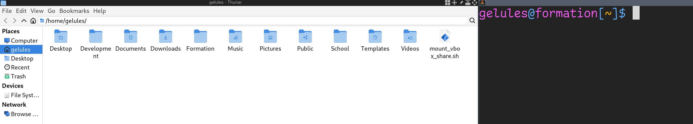
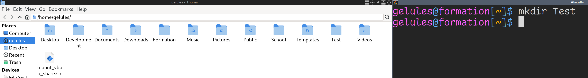
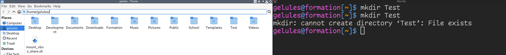
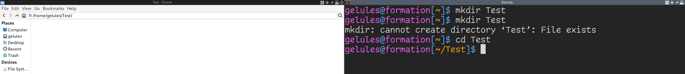
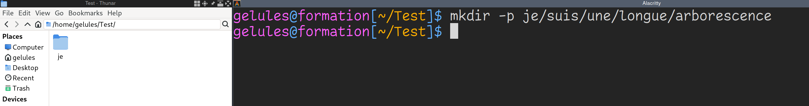
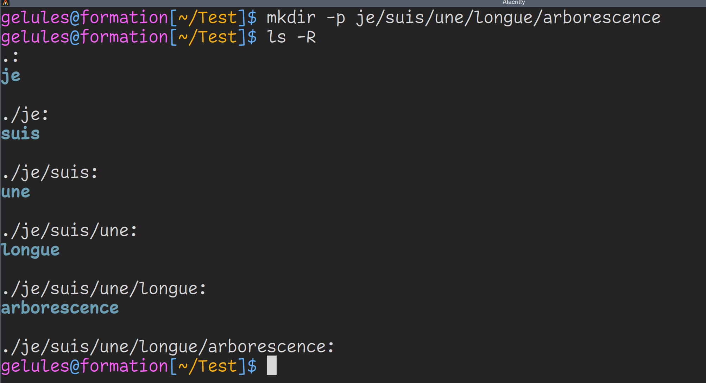
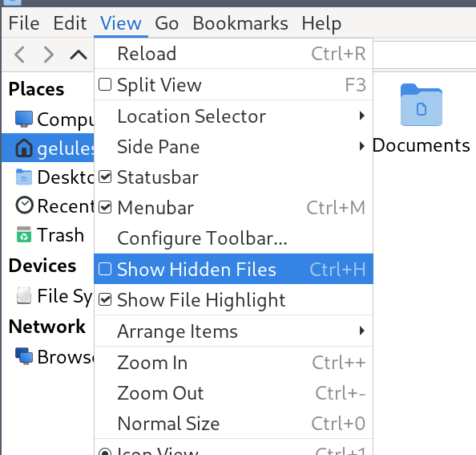

Se déplacer
Introduction
Maintenant que tu sais lire ce que t'affiche ton shell par défaut, tu vas apprendre quelques manoeuvres de base.
Pour comprendre ce qu'il se passe, je te conseille d'ouvrir ton explorateur graphique (le programme qui te permet de voir tes documents graphiquement) d'un côté et ton shell de l'autre côté. Ca te permettra de faire le lien entre ce que tu tapes et ce qu'il se passe dans ton système à chaque commande.
Ton explorateur graphique ne ressemblera peut-être pas au mien qui est Thunar. Et j'aurai probablement à certains endroits des fichiers que tu n'as pas. Ce n'est pas grave.
Dans tous les cas tu verras des dossiers et des fichiers et tu devras double-cliquer pour te déplacer. Qui a dit que Windows avait l'exclusivité du clique ?
Je te conseille de faire les mêmes commandes que moi, pour que ça rentre ! Ne fais pas que lire. L'apprentissage vient surtout par la pratique, même si c'est jouer au miroir.

Tu vois que dans mon exemple, mon shell se trouve dans mon HOME et Thunar aussi. La différence c'est que Thunar me liste directement tous mes fichiers.
Lister un répertoire
Pour lister ton répertoire courant, utilises la commande ls.
$ ls
Desktop Development Documents Downloads Formation mount_vbox_share.sh Music Pictures Public School Templates Videos
$
Tu peux donner un ou plusieurs noms de fichiers et répertoires à ls pour lister leurs contenus.
Depuis ton HOME, exécute
ls Desktop Documents Downloads
Si ces répertoires n'existent pas chez toi, attends de savoir en créer pour tester ls avec des noms de fichiers et répertoires donnés en paramètres.
Créer un répertoire
Pour créer un répertoire, utilise la commande mkdir.
mkdir Test

Comme tu peux le voir, mon explorateur de fichiers s'est actualisé pour afficher le nouveau répertoire. Utilise la commande ls dans ton terminal pour valider que ton terminal le voit également.
Sache que tu peux créer plusieurs répertoires d'un coup en les donnant à ls.
$ mkdir Je suis un seul appel a mkdir
# Cache-cache
Il y a une dernière chose dont je ne t'ai pas parlé. Les fichiers cachés.
Les commandes shell ont pour habitude de ne rien afficher si tout se passe bien. En cas d'erreur, un message s'affichera. Lis toujours tes messages, il ne faut pas avoir peur. C'est justement une aide pour comprendre ce qu'il se passe.

Ici, j'ai voulu créer le répertoire Test alors qu'il existe déjà.
Se déplacer dans un répertoire
Pour te déplacer dans un répertoire graphiquement, c'est facile, tu doubles-cliques dessus.
Pour te déplacer dans un répertoire en terminal, c'est facile, tu utilises la commande cd.
$ cd Test
Déplace toi dans le répertoire Test.

Ton shell affiche maintenant ~/Test. Ca veut dire qu'il se situe dans le répertoire Test lui-même situé dans ton HOME.
Tu peux créer une arborescence complète en donnant le paramètre -p à mkdir.
$ mkdir -p je/suis/une/longue/arborescence
$

Créer des fichiers
Tu ne vas pas encore voir comment éditer des fichiers. Tu vas commencer par créer des fichiers vides.
Pour se faire, utilise la commande touch.
$ touch je_suis_un_fichier
$ ls
Listing long format
Jusqu'ici tu as dû voir les différences entre fichier et répertoire aux couleurs affichées sur le terminal avec ls. Cette coloration est dûe à une configuration de ls.
Dans mon cas, si j'exécuter which ls pour en savoir plus sur la commande ls, j'ai ceci :
$ which ls
ls: aliased to ls --color=auto
$
Ca veut dire que ls utilise par défaut le paramètre --color=auto qui colore les noms des fichiers et répertoires dans ton terminal.
Exécute maintenant ceci, je fais exprès de cacher certains informations pour te forcer à exécuter les commandes :
$ ls
$ mkdir repertoire
$ touch fichier
$ /bin/ls
repertoire fichier
$
Tu vois maintenant que tout s'affiche en blanc. Ce que tu as fait, c'est exécuter le programme ls directement depuis là où il est installé, sans la configuration de coloration automatique de ton shell.
Imagine tomber un jour sur une distribution Linux qui n'affiche pas les couleurs par défaut, comment savoir si ce que tu listes et un fichier ou un répertoire ?
Tu vas utiliser le paramètre -l à ls pour afficher le long listing format, pour afficher plein d'informations sur le répertoire où tu te trouves.
Exécute
$ ls -l
total 0
-rw-r--r-- 1 gelules wheel 0 Jul 20 18:56 fichier
drwxr-xr-x 2 gelules wheel 40 Jul 20 18:55 repertoire
La première ligne indique combien de place sur le disque prend ce que tu listes. Pour l'instant c'est 0 car c'est vide.
Mainenant, pour chaque ligne, regarder le tout premier caractère. Si c'est un tirer '-', c'est que tu listes un fichier, si c'est un 'd' minuscule, c'est que c'est un répertoire.
Tu apprendras le reste des informations listées dans un prochain chapitre.
Lister récursivement
Pour atteindre graphiquement la fin de l'arborescence, ça demande quelques clics. Alors que pour le shell, il suffit de donner le paramètre -R à ls pour lui demander de lister récursivement les répertoires.

Pour information, le '.' situé au début de chaque résultat représente ton dossier courant (le working directory). Ca veut dire que si tu fais la commande
$ cd .
Tu te déplaceras... où tu te trouves.
J'ai un exemple pratique qui sera présenté plus tard.
Supprimer des fichiers et répertoires
Pour supprimer des répertoires, il existe deux commandes. *rmdir et rm.
rmdir va supprimer un répertoire vide et rm avec les bons paramètres va supprimer un répertoire et toute son arborescence récursivement.
Essaie le commandes suivantes, je n'affiche pas le résultat pour te forcer à visualiser par toi-même ce qu'il se passe.
$ ls
je je_suis_un_fichier
$ rmdir je_suis_un_fichier
??? # Mais diantre, que se passe t-il ?
$ rm je_suis_un_fichier
$ ls
je
$ ls -R
.:
je
./je:
suis
./je/suis:
une
./je/suis/une:
longue
./je/suis/une/longue:
arborescence
./je/suis/une/longue/arborescence:
$ rmdir je
??? # Mais diantre, que se passe t-il ?
$ rmdir je/suis/une/longue/arborescence
$ ls -R
???
$ rm -r je
$ ls -R
$
Tu l'as compris, le paramètre -r de rm supprime toute une arborescence.
rm peut aussi être utilisé pour supprimer des fichiers, mais nous n'avons pas encore vu ce cas.
Tu peux également donner plusieurs répertoires à rmdir et rm pour en supprimer plusieurs. Attention, rm doit toujours avoir son paramètre -r si tu supprimes des répertoires. Dans le cas de fichiers, tu n'as pas besoin de l'utiliser.
$ rmdir Je suis un seul appel a mkdir
ou
$ rm -r Je suis un seul appel a mkdir
Renommer des fichiers et répertoires
Pour renommer ou déplacer un répertoire ou un fichier, utilise la commande mv, pour MoVe.
$ touch gato
$ ls
gato
$ mv gato gateau
$ ls
gateau
$ mkdir ventre
$ mv gateau ventre
$ ls
ventre
$ ls ventre
gateau
$
cd en arrière
Tu sais avancer dans des répertoires, mais comment revenir en arrière ?
Il faut donner .. à cd pour revenir en arrière. Chaque .. part en arrière d'un niveau.
Un exemple sera plus parlant.
$ mkdir -p toto/titi/tutu
$ cd toto/titi/tutu
$ cd ..
$ ls
tutu
$ cd ../..
$ ls
toto
$
Retourner au dernier répertoire visité avec cd
Si tu veux basculer vers le dernier répertoire visité, donne - en paramètre à cd.
Je te laisse faire les commandes pour apprécier, j'ai caché exprès les parties intéressantes.
$ mkdir -p je/suis/un/humain tu/es/un/gateau
$ cd je/suis/un/humain
$ cd ../../../tu/es/un/gateau
$ pwd
???
$ cd -
$ pwd
???
$ cd -
$ pwd
???
$
Retourner dans le HOME avec cd
Si tu veux retourner rapidement dans ton HOME, tu peux le faire en appellant simplement cd sans paramètre.
Je te laisse faire les commandes pour apprécier, j'ai caché exprès les parties intéressantes.
$ cd je/suis/un/humain
$ pwd
???
$ cd
$ pwd
???
$
Cas particuliers
Crée le répertoire canare et cd y toi dedans.
~ $ mkdir canare
~ $ cd canare
~/canare $
Tu te rends compte que tu as fait une faute de frappe.
Renomme le répertoire dans lequel tu te trouves ainsi :
~/canare $ mv ../canare ../canard
~/canare $
Horreur et damnation, ton shell affiche encore canare. Il faut que tu exécutes cd . pour que ton shell se mette à jour.
~/canare $ cd .
~/canard $
Maintenant plus drôle. Tu vas créer ce qu'on appelle un undefined behavior ou comportement indéfini.
Voici quelques commandes :
$ mkdir toto
$ cd toto
$ rmdir ../toto
$ cd .
$ pwd
Que se passe t-il ? Tout dépend de ton shell, certains feront avec à leur manière, d'autres afficheront une erreur. C'est un comportement indéfini, le langage shell n'a pas défini quoi faire dans ce cas, chaque interpréteur a un comportement différent.
Le système de fichier
Tu l'as peut-être vu en exécutant la commande pwd, ton chemin commence toujours par un slash '/'.
Ton HOME se trouve dans un autre répertoire appelé home qui se trouve lui-même dans un répertoire nommé / (slash).
Exécute la commande ls / pour voir ce qui se trouve à la racine de ton système de fichier (filesystem).
$ ls /
bin boot dev etc home lib lib64 lost+found media mnt opt proc root run sbin srv sys tmp usr var
Tu n'as peut-être pas exactement le même résultat. Ce n'est pas grave. Tu devrais quand même y voir des similarités.
Pour les utilisateurs Windows, le répertoire racine est un peu équivalent au disque C qui contient tous les répertoires de configuration. C'est faux sur beaucoup d'aspects techniques que tu n'as pas encore besoin de connaître. Je veux juste que tu saches qu'il existe un répertoire racine depuis lequel tu peux te déplacer et lister ce qu'il s'y trouve.
Si jamais tu dois faire des tests temporaires, je te renvoie au répertoire /tmp qui est, dans beaucoup de distributions Linux, remis à zéro à chaque démarrage. Il peut être configuré pour être remis à zéro tous les jours, semaines, mois...
$ cd /tmp
$ touch je_vais_disparaitre
$ ls
je_vais_disparaitre
$ reboot
...
$ cd /tmp
$ ls
Cache-cache
Il y a une dernière chose dont je ne t'ai pas parlé. Les fichiers cachés.
Je vais exprès de cacher certains informations pour te forcer à pratiquer.
Exécute ces commandes depuis ton HOME :
$ mkdir Test
$ cd Test
$ touch .cache affiche
$ ls
???
$
Où est le fichier .cache ? Il est caché. Les fichiers et répertoires dont le nom commencent par un point '.' ne sont pas affichés, car il s'agit en général de fichier de configuration personnelle pour tes programmes et c'est plus élégant de ne pas toujours les afficher.
Si tu veux les afficher, exécute :
$ ls -a
. .. .cache affiche
Mais que sont '.' et '..' ? Rappelle toi, le '.' représente le répertoire dans lequel tu te trouves et '..' représente le répertoire parent.
Si tu veux afficher tout ce qui est caché sauf '.' et '..', exécute :
$ ls -A
.cache affiche
Je te laisse maintenant exécuter cette dernière commande dans ton HOME. Tu verras que même ton explorateur graphique ne t'affiche pas tout par défaut (mais c'est configurable).
